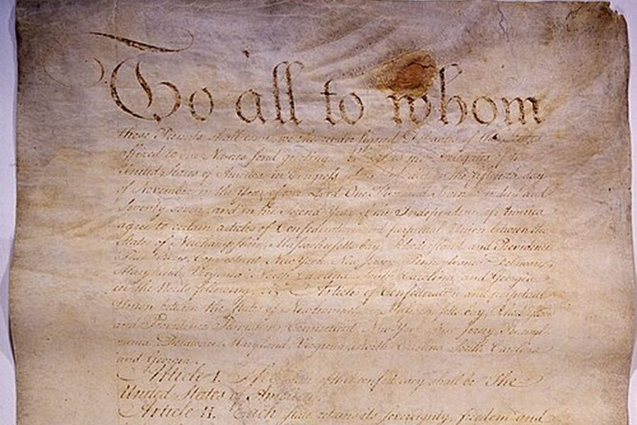

The real problems, the Articles rules, and the “What really happened” boxes are real. Your moves, the meters, the 13-state board, Delegate Pratt, and the “In your game” results are made up to show how the Articles worked.
Picture: first page of the Articles of Confederation, National Archives (public domain).
SS.9-12.Gov.3 Analyze important founding and historical documents to the United States and the State of Iowa. · SS.9-12.Gov.9 Assess how the United States federal system divides powers between national and state governments.